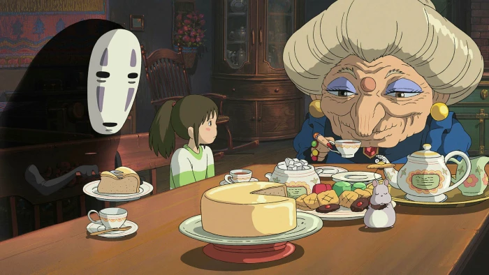

Tea

Description
It takes more effort to find recipes compared to how lazy I am, so tea it is.
Ingredients
- Water
- Tea filter
- Honey
- Lemon juice
- Favourite cup
Preparation
- Put tea filter into favourite cup, buil water, pour water into said cup, wait for 2 minutes.
- Add honey and lemon juice according to taste.
- Zone out and forget about the world